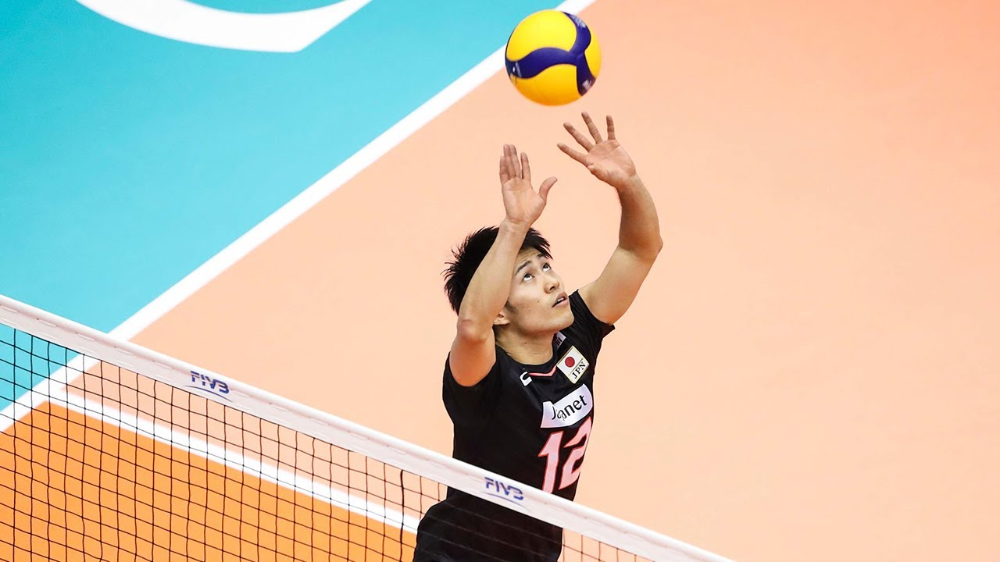

Wing Spiker (Pos.4)
Wing Spikers are the main offence for the team, they usually touch the ball last and hit the ball into the oppositions court with all their power to try and win the point. On defence the spiker will block attacks from the left side of the court.
Wing Spikers are usually the ones with the strongest and most reliable spike on the team, and whenever a pass isn't very good the setter will set the ball nice and high for the spiker.
Middle Blocker (Pos.3)
Middle Blockers are the main blockers for the team, when the opponents are about to spike the ball it's sthe middle blockers job to stop it or at least put pressure on the opposing spiker.
Middle Blockers can attack as well, they usually run quick attacks down the middle to try and open up the opponents defence. Middle blockers are usually one of the tallest on the team.
Opposite (Pos.2)
Opposites are the "All Rounder" player on the team, they can attack by spiking, defend the right side of the court by blocking or set the ball to someone if the setter can't get to the ball.
To play Opposite you need to have good fundamentals and a good understanding of the flow of the game.
Server (Pos.1)
The Server's job is to serve the ball into the opponents court. There are 2 advanced types of serves you can do, a jump power serve or a jump float serve. Jump power serve is basically a spike from the serving position, and a jump float serve isn't as powerful but the trick is to hit the ball so it isn't spinning so it randomly wobbles in the air which makes it hard to receive.
Once the ball is in play the Servers job is to defend the back court and support the front court.
Libero (Pos.6)
The Libero is the defence specialist. They only play the back court, never going into the front court. The libero and Middle Blocker usually sub out with each other when it's their respective turns to swap to the back or front court.

Setter (Pos.5)
The Setter is the core offence of the team. The spikers can't spike properly without a good set first. Setters also touch the ball the most out of everyone on the court because every offencesive play starts with the setter.
The setter can either play front court or back court. Every professional team will play backcourt setter because it opens up more attacking options in the front.